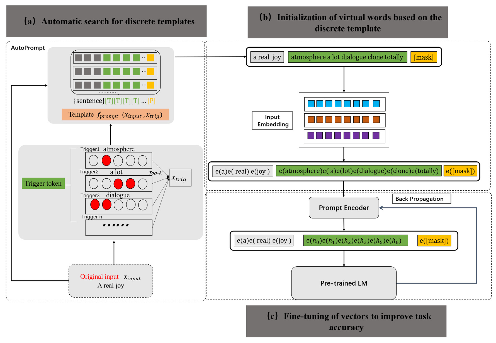
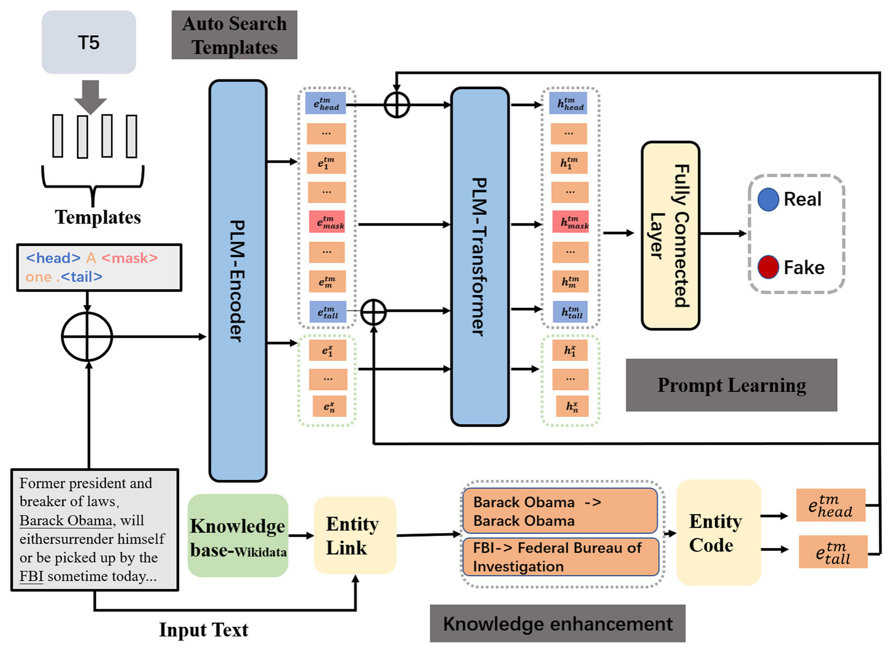
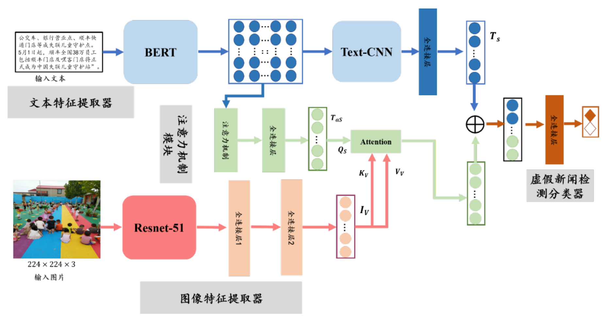

Prompt learning
Automatic prompt construction and continuous optimization.
Natural Language Processing · Multimodal Learning
My research explores prompt learning and knowledge-enhanced language models, with a focus on fake news detection and the connections between textual and visual information.
01 / About me
I work on prompt learning, knowledge-enhanced natural language processing, and multimodal misinformation detection. A central question in my research is how pretrained language models can make better use of limited labels by drawing on carefully constructed prompts and external knowledge.
My published work studies automatically generated continuous prompts and knowledge-enhanced AutoPrompt. My master’s research further examines how textual and visual feature associations can support fake news detection.
I am interested in PhD research that connects these foundations with more reliable language and multimodal models, especially when supervision is scarce and evidence is incomplete.
ygnuist@163.com ↗Automatic prompt construction and continuous optimization.
External entity knowledge and learning with limited labels.
Complementary textual and visual evidence.
02 / Research portfolio
Three connected lines of work, from prompt construction to knowledge and multimodal evidence.

View full-size figure ↗Journal research · ESWA 2024
How can a language model’s knowledge be accessed through prompts that are both automatically constructed and trainable?
This work connects discrete prompt search with continuous prompt initialization and optimization, bringing prompt construction and model adaptation into one workflow.
Prompt construction affects how pretrained models expose and use their knowledge. The study investigates a connection between automatically searched discrete prompts and optimizable continuous representations.

View full-size figure ↗Journal research · NCAA 2024
Fake news detection faces expensive annotation, limited samples, and generalization challenges. KEAP explores prompt learning as a way to address these constraints.
The method combines T5-generated prompt templates with external entity knowledge and studies few-shot detection on GossipCop and PolitiFact.
Can automatically generated prompts and external entity knowledge help detect fake information when labeled examples are limited?
T5 generates templates that reformulate detection as a prompt-learning task. External entity knowledge provides additional context. The published study evaluates the approach on GossipCop and PolitiFact, including few-shot settings.

View full-size figure ↗Master’s thesis · Multimodal learning
Fake News Detection Based on Prompt Learning and Enhanced Feature Associations
My master’s research examines prompt-based language understanding, external entity knowledge, and associations between textual and visual features for fake news detection.
The thesis brings together prompt learning and feature association enhancement, with attention to the relationship between language representations, external knowledge, and visual information.
基于提示学习与关联特征增强的虚假新闻检测方法
The English title above is a descriptive translation.
03 / Publications
Full citations, publisher links, and BibTeX.
Expert Systems with Applications, 239, 122327.
@article{chen2024eliciting,
title={Eliciting knowledge from language models with automatically generated continuous prompts},
author={Chen, Yadang and Yang, Gang and Wang, Duolin and Li, Dichao},
journal={Expert Systems with Applications},
volume={239},
pages={122327},
year={2024},
doi={10.1016/j.eswa.2023.122327}
}Neural Computing and Applications, 36, 7725–7742.
@article{che2024detecting,
title={Detecting fake information with knowledge-enhanced AutoPrompt},
author={Che, Xun and Yang, Gang and Chen, Yadang and Li, Qianmu},
journal={Neural Computing and Applications},
volume={36},
pages={7725--7742},
year={2024},
doi={10.1007/s00521-024-09491-7}
}04 / Research outlook
Prospective PhD interests building on my previous work.
How can prompt design and optimization make pretrained models more useful when task-specific supervision is scarce?
Related research ↑How should external knowledge be selected and integrated so that it supports more reliable language understanding?
Related research ↑How can models use complementary and conflicting signals across text and images to assess information?
Related research ↑05 / Contact
I welcome conversations about PhD opportunities and research in prompt learning, knowledge-enhanced NLP, and multimodal misinformation detection.